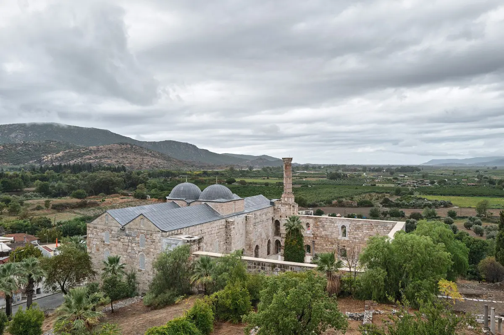

CULTURE IS A CONTINUUM
History lives in the plural.
UNESCO describes a continuous settlement history here, from the seventh millennium BCE to present-day Selçuk. Ancient Greek and Roman cities are one chapter, not the whole story.
SIX CONNECTED LAYERS
Many times, one valley.
These eras overlap. The sequence is a guide to further reading, not a complete chronology.
- 01
7TH MILLENNIUM BCE
Çukuriçi Mound
The earliest traces of settlement in the former Kaystros estuary come from a Neolithic mound now far inland, at the southern edge of the old bay.
- 02
2ND MILLENNIUM BCE – IONIAN ERA
The sanctuary of Artemis
An Anatolian mother goddess became the Ephesian Artemis, whose sanctuary grew into one of the most powerful of the ancient world. Ephesus led the Ionian cities of the coast.
- 03
4TH CENTURY BCE – ROMAN EMPIRE
A city that followed the coast
Lysimachos refounded Ephesus on a new site as silt pushed the shoreline west. Under Rome it became capital of the province of Asia, with the Library of Celsus and the terrace houses.
- 04
5TH CENTURY CE
A centre of pilgrimage
Church councils met here in 431 and 449. The Basilica of St John and the House of the Virgin Mary drew pilgrims, as they still do today.
- 05
14TH CENTURY ONWARDS
Ayasuluk becomes Selçuk
The İsa Bey Mosque and the medieval settlement on Ayasuluk Hill mark the arrival of Turkish principalities. The town at the foot of the hill grew into modern Selçuk.
- 06
20TH CENTURY – TODAY
A living district
After the 1923 population exchange, families from the Kavala region settled in Şirince and kept up its vines and olives. Ephesus was inscribed on the World Heritage List in 2015.

ONE HILL, THREE FAITHS
Artemis, St John, İsa Bey.
Within a few hundred metres, the Artemision, the Basilica of St John and the İsa Bey Mosque show how one landscape was sacred to successive communities. Be respectful at active places of worship and follow site rules.
Visit Ayasuluk HillA WAY TO VISIT
Look for what a place remembers—and for who looks after it now.
Stay on visitor paths, avoid touching or removing material, and support the people who care for the sites today.
GO DEEPER